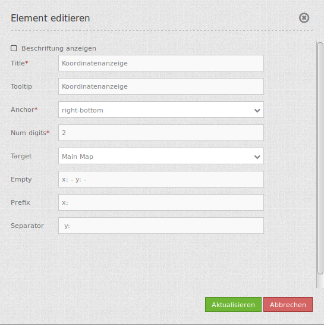

Coordinates Display (Koordinatenanzeige)¶
Das Koordinatenanzeige-Element zeigt die aktuelle Mausposition in den Kartenkoordinaten. Die Koordinaten sind abhängig vom eingestellten räumlichen Referenzsystem, welches im Spatial Reference System Selector geändert werden kann.

Konfiguration¶
{kind=link}
- Beschriftung anzeigen (Show title label): Schaltet die Beschriftung an/aus. Die Beschriftung richtet sich nach dem Title.
- Title: Titel des Elements. Dieser wird in der Layouts Liste angezeigt. Der Titel wird angezeigt, wenn “Beschriftung anzeigen” aktiviert ist.
- Tooltip: Text, der angezeigt wird, wenn der Mauszeiger eine längere Zeit über dem Element verweilt.
- Anchor: Verankerung des Elements (left-top, left-bottom, right-top, right-bottom). Bestimmt die Position des Elements im Layout.
- Numdigits: Anzahl der Nachkommastellen der Koordinaten.
- Target: ID des Kartenelements, auf das sich das Element bezieht.
- Emtpy: Angezeigter Text, wenn sich die Maus nicht in der Karte befindet (Standard: ‘x= - y= -‘).
- Prefix: Präfix vor der X-Koordinate (Standard ‘x= ‘).
- Separator: Separator nach X- und vor Y-Koordinate (Standard ‘ y= ‘).
YAML-Definition:¶
tooltip: 'coordinates display' # Text des Tooltips
numDigits: 2 # die Anzahl der Nachkommastellen, die jede Koordinate haben soll
target: ~ # ID des Kartenelements
label: true # false/true, um den Button zu beschriften. Der Standardwert ist true.
empty: 'x= - y= -' # zeigt diesen Text, wenn die Maus sich nicht in der Karte befindet.
prefix: 'x= ' # zeigt ein Präfix vor der X-Koordinate
separator: ' y= ' # zeigt einen Separator vor der Y-Koordinate
CSS-Styling¶
Das Element kann über den folgenden CSS-Style angepasst werden, beispielsweise um die Breite zu vergrößern.
.mb-element-coordsdisplay {
width: 500px;
}
Class, Widget & Style¶
- Class: Mapbender\CoreBundle\Element\CoordinatesDisplay
- Widget: mapbender.element.coordinatesdisplay.js
- Style: mapbender.elements.css
HTTP Callbacks¶
Keine.
JavaScript Signals¶
Keine.